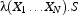

| << Prev | - Up - | Next >> |
私達は既にいくつかの Oz の基本的な文(statement)を見てきました。新しい変数の導入と文のシーケンス:
S1 S2
再度繰り返しますが、スレッドは文をシーケンシャルな順序で実行します。しかしながらスレッドは、保守的な言語とは対照的に、いくつかの文で一時停止するかもしれず、それゆえ上において、スレッドは S2 が始まる前に S1 の実行を完了しなければなりません。事実、S1 中で例外が発生した場合など、S2 が全く実行されない事もあります。
skip 文は空の文です。
Oz は以下の形式のシンプルな条件文を提供します:
if B thenS1elseS2end
B はブール値であるべきです。
B が true に束縛されていれば S1 が実行されます。
B が false に束縛されていれば S2 が実行されます。
B が非ブール値に束縛されていれば、例外が発生します。
または B が束縛されていなければ、上記のどれかが適用されるまでスレッドは一時停止します。
比較(comparison)手続き
Oz は比較のためにいくつもの組込の3番地コード形式の手続き(tertiary procedure)を提供しています。これらは私達が前に目にした == と同様に \=, =<, <, >=, > を含みます。これらの手続きは、中置の演算子としてブール値を返す関数であるという事が共通しています。以下の例は If 文の中でのより大きい(greater-than)演算子 > を使用を示します(訳注: 以下で実際に使われてる >= はgte(greater-than-or-equal)ですが…)。
この例では Z が X と Y のうち大きな方に束縛されます(つまり Y ):
local X Y Z in
X = 5 Y = 10
if X >= Y then Z = X else Z = Y end
endFigure 5.1: If 文の使用
キーワード elseif を使う文:
ifB1thenS1elseifB2thenS2elseS3end
はネストした if 文の略式の書き方です:
ifB1thenS1B2
else ifthenS2S3
elseend
end
else 部の無い if 文:
ifB1thenS1end
は以下と等しいです:
ifB1thenS1else skip end
手続き定義は Oz の主要な(primary)抽象です。手続きは定義可能で、他の手続きに引数として渡す事が出来、レコードにストア出来ます。手続きの定義は以下の構文です。
proc {P X1 ... Xn} S end
変数 P が既に導入されているとすると、上の文の実行は次の様になります:
ラムダ(lambda)式と名付けられたユニークなクロージャ(closure)の生成 
変数 P はクロージャに束縛されています。
Oz の手続きはそのユニークなクロージャによって与えられたユニークな識別子を持っており、それは他の全ての手続きから区別されます。2つの手続きの定義は、たとえそれらの見た目が似ていても、常に異なります。手続きは私達が遭遇する、同等性が名前(name)の同等性に基づいた最初の Oz の値です。その他にはスレッド(thread)、セル(cell)、チャンク(chunk)が含まれます。
一般的に、手続き定義の中での文 S は多くの変数の生成(occurrence)を起こします。文の中で記述され生成される変数は識別子であり、実行時に生成されるデータ構造である論理変数とは区別されます。S 中に生成されるいくつかの識別子は構文的に束縛(syntactically bound)され、他の物は自由(free)です。S で生成される識別子 X1 は形式的パラメータ X のスコープ内にいれば束縛され、そうでなければ X を導入したスコープでのものに束縛されます。そうでなければ、識別子は自由です。プログラム中の自由な識別子は最終的にはそれぞれ、文脈的に最も近い識別子束縛構造によって束縛されます。
私達は既に手続きをどうやって適用するか(呼び出すか)を見ました。私達にとって最初となる手続き定義を示しましょう。Figure 5.1 で、私達は2つの数字リテラルのうち最大のものを計算するやり方を見ました。このコードを手続きに抽象します。
local Max X Y Z in
proc {Max X Y Z}
if X >= Y then Z = X else Z = Y end
end
X = 5
Y = 10
{Max X Y Z} {Browse Z}
end
ある人はなぜ変数がレコードへの束縛とは違った方法で手続きへ束縛されるのか問うかもしれません。例: X = f(...)答えは、あなたが見ているのは単に同等形式の構文的亜種であるからです。
P = proc {$ X1 ... Xn} S end
R.H.S.(訳注:Right-Hand Side 右辺) は匿名手続き値(anonymous procedural value)を定義します。これは次と同等です
proc {P X1 ... Xn} S end
Oz では、変数初期化同等性(variable-initialization equality)を使う事によって、変数が導入されると即座に初期化する事が出来ます。
X = <Value>または
<Record> = <Value>
local と in の間、文 local ... in ... end において。そのため、前の例は匿名手続きを使って以下の様にもかけます。
local
Max = proc {$ X Y Z}
if X >= Y then Z = X
else Z = Y end
end
X = 5
Y = 10
Z
in
{Max X Y Z} {Browse Z}
end
さあ、変数初期化をより詳細に理解しましょう。一般的なルールはこうです: 変数初期化同等性では、変数は L.H.S.(Left-Hand Side 左辺)でのみ発生する。同等性は導入されたものについてのものである。以下の例を考えましょう:
local
Y = 1
in
local
M = f(M Y)
[X1 Y] = L
L = [1 2]
in {Browse [M L]} end
end
最初 Y が導入され、外側の local ... in ... end で初期化されます。そして、内部の local ... in ... end で全ての左辺が導入されます、例として M, Y, X1, L。それゆえ、外側の変数 Y は最内の local ... end 文では不可視となっています。上の文は次と同等です:
local Y in
Y = 1
local M X1 Y L in
M = f(M Y)
L = [X1 Y]
L = [1 2]
{Browse [M L]}
end
end
もし私達が Y を外側のスコープのものとして表現したいのなら 内側の左辺での初期化同等性での Y の導入を、以下の様なエクスクラメーションマーク ! を使う事によって抑制しなければいけません。エクスクラメーションマーク ! は初期化同等性の左辺でのみ意味を成します 2 。
local
Y = 1
in
local
M = f(M Y)
[X1 !Y] = L
L = [1 2]
in {Browse [M L]}
end
end
とても簡単な例を考えましょう: 二分木への挿入二分木は nil と表される空のものか、タプル tree(Key Value TreeL TreeR) …ここで Key は値 Value と関連付けられたノードのキーで、 TreeL は Key より小さなキーを持つ左部分木、そして TreeR は Key より大きなキーを持つ右部分木…として表されるものかです。手続き Insert は4つの引数を取り、うち3つは入力用引数 Key, Value そして TreeIn で、1つの出力用引数は挿入後の木の結果に束縛された TreeOut です。
プログラムは Figure 5.2 に示されます。TreeOut の前の記号 ? は、引数が出力用引数として振る舞う事を示すために任意に付ける事の出来る 説明用コメント(documentation comment) です(訳注:付けても付けなくても機能的には変わりませんが読む人に対しての目印として有用です)。手続きの働きは明白です。最初は木が空かどうかをあてにし、後では木中のノードのキーと入力用のキーとの比較をあてにします。if ... then ... elseif ... else ... end の明白な意味に注目して下さい。
proc {Insert Key Value TreeIn ?TreeOut}
if TreeIn == nil then TreeOut = tree(Key Value nil nil)
else
local tree(K1 V1 T1 T2) = TreeIn in
if Key == K1 then TreeOut = tree(Key Value T1 T2)
elseif Key < K1 then
local T in
TreeOut = tree(K1 V1 T T2)
{Insert Key Value T1 T}
end
else
local T in
TreeOut = tree(K1 V1 T1 T)
{Insert Key Value T2 T}
end
end
end
end
endFigure 5.2: 二分木へのノード(キーと値)の挿入
Figure 5.2 では、次の文で導入されるローカル変数が
local tree(K1 V1 T1 T2)= TreeIn in ...
暗黙の内にローカルに導入された変数 K1, V1, T1 と T2 から抽出されたものとのパターンマッチを行います。
Oz はパターン中で暗黙的な変数の導入を許す、明示的なパターンマッチである case 文を提供します。
case E ofPattern_1thenS1Pattern_2
[]thenS2S
[] ...
elseend
Pattern_i 中の全変数は暗黙的に定義され、Si までに及ぶスコープを持っています。
式 E が V に評価される事について考えてみましょう。case 文の実行はシーケンシャルに順々に V をパターン Pattern_1, Pattern_2, ...,Pattern_n に対してのマッチングを試みる事です。V の Pattern_i に対するマッチングは、左から右(left-to-right)、深さ優先(depth-first)で行われます。
もし V が Pattern_i に V 中で発生するどの変数の束縛もなしにマッチするなら、対応する文 Si が実行されます。
もし V が Pattern_i に V で発生するいくつかの変数の束縛とともにマッチするなら、スレッドは一時停止します。
もし V と Pattern_i のマッチングが失敗すれば、V は次のパターン Pattern_i+1 を試行し、そうでなければ else 文 S が実行されます。
else 部は省略可能で、その場合に全てのマッチングが失敗すると例外が発生します。
再度になりますが、各パターンは新しいローカル変数の導入を ! を使って抑制する事が出来ます。例えば、以下の様に:
case f(X1 X2) of f(!Y Z) then ... else ... end
X1 は外部の変数 Y に対してマッチします。マッチングの結果を決定する際に、X1 が正しく具体化(instantiated)されていなければ、case 文の実行は一時停止する事を思い出して下さい。Figure 5.3 では case 文のマッチングを使った木挿入手続きを示す事によって、この事が全て言い表されています。略記によって構文のネストを減らしてもいます:
localTin
TreeOut = tree( ...T... )
{Insert ...T}
end
これを次のように:
Tin
TreeOut = tree( ...T... )
{Insert ...T}
% パターンマッチのための case
proc {Insert Key Value TreeIn ?TreeOut}
case TreeIn
of nil then TreeOut = tree(Key Value nil nil)
[] tree(K1 V1 T1 T2) then
if Key == K1 then TreeOut = tree(Key Value T1 T2)
elseif Key < K1 then T in
TreeOut = tree(K1 V1 T T2)
{Insert Key Value T1 T}
else T in
TreeOut = tree(K1 V1 T1 T)
{Insert Key Value T2 T}
end
end
endFigure 5.3: case 文を使った木への挿入
マッチの対象にするかもしれない式 E は単なる変数ではなく、どんなレコード構造である事も出来ます。これは Figure 5.4 に示される様な複数引数のマッチングを許し、ソートされたリスト Xs と Ys をソートされたリスト Zs にマージする事も出来ます。
proc {SMerge Xs Ys Zs}
case Xs#Ys
of nil#Ys then Zs=Ys
[] Xs#nil then Zs=Xs
[] (X|Xr) # (Y|Yr) then
if X=<Y then Zr in
Zs = X|Zr
{SMerge Xr Ys Zr}
else Zr in
Zs = Y|Zr
{SMerge Xs Yr Zr}
end
end
endFigure 5.4: 2つのソートされたリストのマージ
私達の Insert 手続きを Figure 5.3 の様に使ってみましょう。以下の文はいくつかのノードを初期状態が空の木に挿入しています。手続き呼び出しの記述を行うためにいくつもの中間変数を導入しなければならない事に注意して下さい。
local T0 T1 T2 T3 in
{Insert seif 43 nil T0}
{Insert eeva 45 T0 T1}
{Insert rebecca 20 T1 T2}
{Insert alex 17 T2 T3}
{Browse T3}
end
Oz は他の文の中の式の位置で一つの手続きをネストする構文サポートを提供しています。それで、一般的には:
local Y in
{P ... Y ...}
{Q Y ... }
end
は次の様に書けます:
{Q {P ... $ ...} ... }
$ を ネストマーカー(nesting marker)として使うと、変数 Y は省略されます。平坦な構文に戻すルールでは、手続き呼び出し中でのネストされた手続き呼び出しは、現在の文の実行される前に移動されます; そして一つの新しい変数がネストされた手続き呼び出しを置き換えるように発生し、他はネストマーカーを置き換えるように発生します。
ネストの他の形式は関数ネストと呼ばれるものです: 手続き {P X ... R} は関数と考えられます; その結果は引数 R です。それゆえ、{P X ...} は結果用引数 R の代わりにどんな式にも挿入されうる関数呼び出しと考えられます。そのため {Q {P X ... } ... } は次と等しいです:
local R in
{P X ... R}
{Q R ... }
end
今私達の例に戻ると、関数ネストを使ったより適切な形式は:
{Browse {Insert alex 17
{Insert rebecca 20
{Insert eeva 45 {Insert seif 43 nil}}}}}
ここに覚えておくもう一つのルールがあります。レコードまたはタプルの中ではそれはネストされたアプリケーションとして次の様に行われなければならないという事です:
Zs = X|{SMerge Xr Ys}
ここで、ネストされたアプリケーションは、レコード(またはリスト)の構築文の実行の後に行われます。それゆえ、私達は次を得ます
local Zr in
Zs = X|Zr
{SMerge Xr Ys Zr}
end
この様にすると多くの再帰的手続きは末尾再帰(tail-recursive)になります。末尾再帰手続きは繰り返し構築を空間効率良く実行します。
私達の SMerge 手続きを Figure 5.5 に示される様に書き直せます。ここで私達はネストされたアプリケーションを使います。
proc {SMerge Xs Ys Zs}
case Xs#Ys
of nil#Ys then Zs=Ys
[] Xs#nil then Zs=Xs
[] (X|Xr) # (Y|Yr) then
if X=<Y then
Zs = X|{SMerge Xr Ys}
else Zr in
Zs = Y|{SMerge Xs Yr}
end
end
endFigure 5.5: 2つのソートされたリストのマージをネスト形式で行う
二分木への要素の挿入を行ったので、適切な二分木の構造を持っているかをチェックするプログラムを定義してみましょう。Figure 5.6 中に示される手続き BinaryTree は構造が二分木かそうでないかを検証し、true か false を結果用引数 B で返します。
補助のローカル手続き And も定義している事に注目して下さい。
% 二分木?
local
proc {And B1 B2 ?B}
if B1 then B = B2 else B = false end
end
in
proc {BinaryTree T ?B}
case T
of nil then B = true
[] tree(K V T1 T2) then
{And {BinaryTree T1} {BinaryTree T2} B}
else B = false end
end
endFigure 5.6: 二分木のチェック
{And {BinaryTree T1} {BinaryTree T2} B} の呼び出しを考えましょう。これは確かに必要のない仕事をしています。私達のネストのルールによると、それは最初の引数が false なら2番目を評価します。最初の2つの引数を2つの手続きとして取る新しい手続き AndThen を作る事でこの問題を修正でき、それは最初のものが false を返した場合のみ2番目を呼び出します; それゆえ、値が実際に必要になる時までその実行を遅延する事が出来ます。Figure 5.7 に手続きを示します。AndThen は高階手続き(higher-order procedure)の最初の例です。高階手続きとは手続きを引数として取り、結果として手続きを返すかもしれない手続きの事です。この場合では、AndThen は単なるブール値を戻します。しかしながら、一般に、結果として手続きを返す手続きの例を見る事になります。関数型言語では、高階手続きは普遍的に再利用可能な部品を作るのに非常に重要な機構です。
local
proc {AndThen BP1 BP2 ?B}
if {BP1} then B = {BP2} else B = false end
end
in
proc {BinaryTree T ?B}
case T
of nil then B = true
[] tree(K V T1 T2) then
{AndThen
proc {$ B1} {BinaryTree T1 B1} end
proc {$ B2} {BinaryTree T2 B2} end
B}
else B = false end
end
endFigure 5.7: 二分木を遅延的(lazily)にチェックする
高階手続きは Oz で種々の制御抽象を定義するために使われます。モジュール Control と List や他の多くの中で、あなたは多くの制御抽象を目にするでしょう。いくつかのサンプルです。手続き {For From To Step P} は単項手続き(unary procedure) P (P/1 を一般にこう呼びます) の適用を From から To まで Step 間隔で繰り返し行う抽象です。{For 1 10 1 Browse} の実行は整数 1 2 ... 10 を表示するでしょう。
local
proc {HelpPlus C To Step P}
if C=<To then {P C} {HelpPlus C+Step To Step P} end
end
proc {HelpMinus C To Step P}
if C>=To then {P C} {HelpMinus C+Step To Step P} end
end
in proc {For From To Step P}
if Step>0 then {HelpPlus From To Step P}
else {HelpMinus From To Step P} end
end
endFigure 5.8: For 反復
もう一つのよく使われる制御抽象は ForAll/2 反復で List モジュールで定義されています。ForAll/2 は単項手続きをリスト中の全要素にリストで定義されている順に適用します。リストが他の並行スレッドによって漸増的に生成される場合に何が起こるか考えて下さい。この場合では消費者(consumer)スレッドはリストのデータが利用可能になるタイミングで同期するでしょう。リストは要素のストリームとして振る舞い、私達はスレッド間でのストリームコミュニケーションを自動的に手に入れます。
proc {ForAll Xs P}
case Xs
of nil then skip
[] X|Xr then
{P X}
{ForAll Xr P}
end
end
Oz は例外に対するかつ/または予測不可能な事態に対する安全防護プログラムを許す例外制御メカニズムを組み込んでいます。それはユーザ定義の例外を発生させ扱う事も可能です。
例外はどんな式でも E です。例外 E を発生させるには、以下の文を実行します:
raiseEend
これはシンプルな例です:
proc {Eval E}
case E
of plus(X Y) then {Browse X+Y}
[] times(X Y) then {Browse X*Y}
else raise illFormedExpression(E) end
end
end
基本的な例外制御文は try 文と呼ばれます。その最もシンプルは形式は:
tryS1catch X thenS2end
この文の実行は S1 が例外を発生させなければ S1 を実行するという事と等価です。もし S1 が例外 E を発生させれば、X は E に束縛され、文 S2 が実行されます。変数 X は S2 のスコープで可視です。
より便利な try 文は以下になります:
tryScatchPattern_1
thenS1Pattern_2
[]thenS2Pattern_n
...
[]thenSn
end
これは次に等しいです:
tryScatch X thenPattern_1
case X
ofthenS1Pattern_2
[]thenS2Pattern_n
...
[]thenSn
else raise X end end
end
言葉にすると、この文の実行は、 S が例外をあげなかった場合に S を実行する、という事に等しいです。もし S が例外 E を発生させたら E はパターン Pattern_i のうちの一つとマッチし、制御は対応する文 S_i に渡されます。もし E がどのパターンともマッチしなければ、例外は外側の try 文にキャッチされるまで伝播しつづけ、(それでもキャッチされなければ)最終的には漏れた全例外をキャッチするシステムによってキャッチされます。
try
{ForAll [plus(5 10) times(6 11) min(7 10)] Eval}
catch
illFormedExpression(X) then {Browse '** '#X#' **'}
end
try 文は、正常終了でも例外発生終了でも実行される最後の文 S_final を指定する事が出来ます。
tryScatchPattern_1
thenS1Pattern_2
[]thenS2Pattern_n
...
[]thenSnS_final
finally
end
F3 は開かれたファイルと仮定して下さい; 手続き Process/1 はファイルをいくつかの方法で操作します; そして手続き CloseFile/1 はファイルを閉じます。以下のプログラムは F が正常終了でも例外発生終了でも閉じられる事を保証します。
try
{Process F}
catch X then {Browse '** '#X#' **'}
finally {CloseFile F} end
Oz システムによって発生した例外は次のラベルによって記録されます: failure, error, system
failure: Oz にストアされた値と整合性を持たない同等性操作を行おうとした事を示します。
error: 手続きでないものを引数に適用しようとしたり整数をアトムに足そうとしたりといった起こるべきでない実行時エラーを示します。
system: Mozart オペレーティングシステムプロセスの実行時の状況を示します。閉じられたファイルやウィンドウ、2つの Mozart プロセス間の接続の失敗の様な予測不可能な状況。
以下の例はどうやってラベルのみによって failure 例外の発生をキャッチするかのデモンストレーションです。これは実装の詳細にあまり依存しない推奨される方法です。
proc {One X} X=1 end
proc {Two X} X=2 end
try {One}={Two}
catch
failure(...) then {Show caughtFailure}
end
ここでパターン failure(...) は全てのラベルが failure である全てのレコードをキャッチしています。例外が発生しても制御されない時、エラーメッセージが emulator ウィンドウ(standard error)に印字され、現在のスレッドは終了します。スタンドアロンなアプリケーションではデフォルトの動作は標準のエラーでメッセージが印字され、全アプリケーションが終了します。個々のアプリケーションのためにこの動作をより多くの記述を行うように変更する事が出来ます。
| << Prev | - Up - | Next >> |
! は新しい変数を抑制したい他の状況でも使えます、例えばパターンマッチ構築の様な。